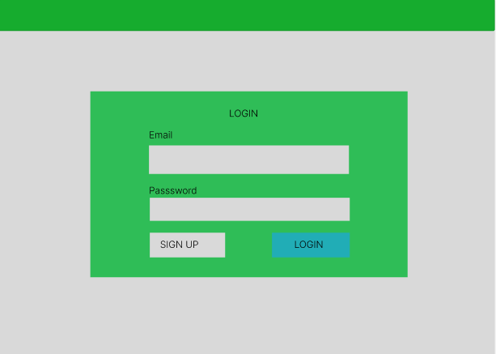
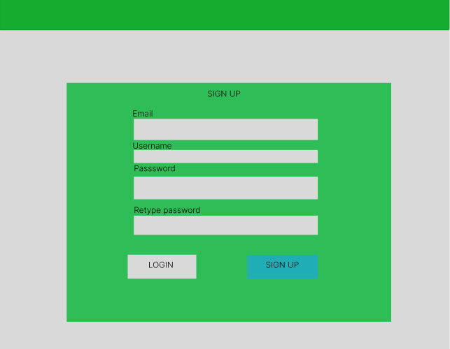
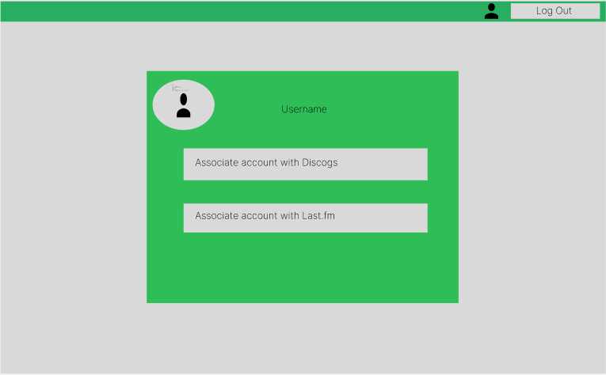
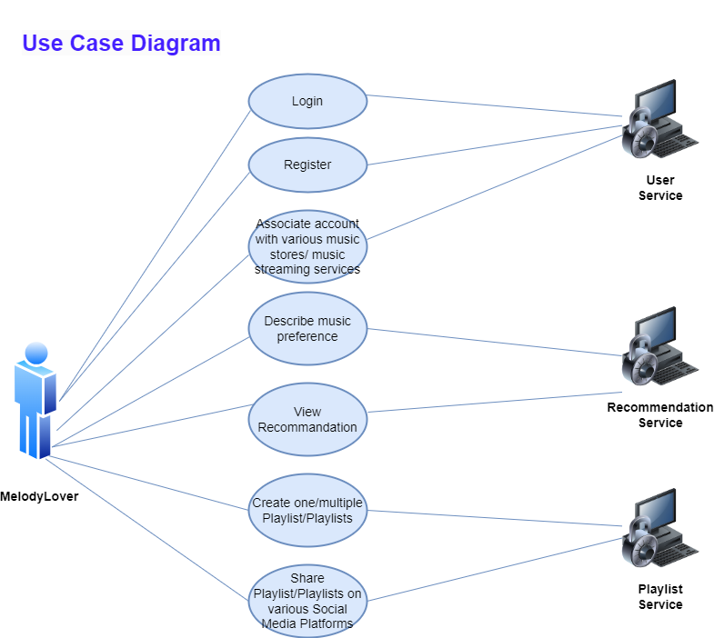

Vire (Vinyl Recommender Tool) - Technical Report
1. Project description
Build a (micro-)service Web system able to "intelligently" recommend – by exposing a SPARQL endpoint – vinyl music records according to various criteria: user preferences (specified via controlled natural language constructs such as "I always like/love/prefer classical music, especially opera music by Rossini or Verdi and performed by Angela Gheorghiu or Juan Diego Flórez; I sometimes like progressive rock and post-rock; I like only metal albums released before 2000; I always dislike/hate rap and hip-hop; I dislike songs produced by Flood in the last 25 years"), past song purchases on various music stores, playlists – available online via music streaming services: Last.fm and alternative solutions – and/or locally – for instance, by uploading a JSPF/XSPF document. The playlists could be created by the user or shared by her/his virtual "friends" (consider at least one social network). The system will use several music-related knowledge models (e.g., Music Ontology or MusicRecording concept from schema.org) and available public resources: Discogs, MusicBrainz, Musicmoz Music Styles.
2. Architecture of the Web application
High Level Arhitecture for our WEB Application:

Database Arhitecture
The database architecture comprises several interrelated tables designed to store and organize information about music tracks, collections of tracks, users (referred to as members), and authentication tokens for streaming and recording services.
Tracks Table: This table stores details about music tracks. Each track has a unique id, and attributes that specify the singer, creation_date of the track, and its genre.
Collections_tracks Table: This is a junction table that establishes a many-to-many relationship between collections and tracks, allowing a single collection to contain multiple tracks and a single track to be part of multiple collections. Each record has a unique id, with collection_id and track_id serving as foreign keys to the collections and tracks tables respectively.
Collections Table: This table details the collections, which can represent albums, playlists, or other groupings of tracks. Each collection is uniquely identified by an id and is associated with a member_id indicating the creator of the collection. It also includes the name of the collection and the creation_date.
Collections_members Table: This junction table manages the associations between members and collections, allowing members to be linked to multiple collections and vice versa. The table uses collection_id and member_id as foreign keys to reference the collections and members tables, respectively.
Members Table: The members table contains user information. Each member is assigned a unique id and has fields for first_name, last_name, email, country_code, creation_date, and secret, where secret is used for storing encrypted passwords or authentication-related data.
Stream_fm_tokens Table: This table holds tokens associated with streaming services. Each token has a unique id and is linked to a member via the email field. The password field is used to store an encrypted password or token.
Record_token Table: Similar to the stream_fm_tokens table, this table stores tokens related to recording services. It includes a unique id, and the email and password fields for authentication purposes.
Backend Services
Vinyl Architecture (Main Endpoint)
This service offers a single endpoint. The endpoint accepts a query as input and, using this query, generates a list of potential recommendations by accessing data from WikiData. The endpoint's output will consist of vinyl record information.
The arhitecture of the service is the following:

Schema GraphQL:
type Artist {
name: String
url: String
}
type Genre {
name: String
url: String
}
type Vinyl {
title: String
artist: Artist
genre: Genre
url: String
}
type Query {
vinyls: [Vinyl]
}
User Architecture

Open API for User Architecture:
Recommandation Architecture
This service is tasked with offering a range of vinyl record recommendations, derived from various criteria.
Three distinct endpoints will be made available for this service. Each will have a unique input format, but ultimately, they will be configured to retrieve data from WikiData by interacting with the Vinyls GraphQL endpoint.
The role of this endpoint is to serve as a bridge between the application's frontend and the Vinyls Service, which delivers the actual recommendations. The endpoint will convert the received input into a format that the Vinyls GraphQL endpoint can readily understand and process.
The arhitecture of the service is the following:

I. User Input-Based Recommendation:
Concept: Users will express their music preferences using a Controlled Natural Language (CNL).
Definition: Controlled natural language are simplified natural languages with limited grammar and vocabulary to reduce ambiguity and complexity.
Purpose of CNL: To limit user inputs to specific words, ensuring clarity and simplicity.
CNL Structure:
Music Genres and Artists.
Predicates (e.g., like, dislike) to express feelings.
Frequency Words (e.g., always, never, sometimes).
Summary: In our user interface, there will be a specific section dedicated to this recommendation feature. Essentially, users will be asked to indicate their preferences regarding various artists and music genres by selecting either 'like' or 'dislike' for each. Additionally, they will be required to choose a time period for the music's release, such as the year, to further tailor their recommendations.
II. Recommendation Based on Past Purchases:
Mechanism: Users receive recommendations based on their previous purchases on Discogs.
Integration: Users link their application account to their Discogs account.
Process: Upon linking, the app saves the user's Discogs data. When requesting data, the app uses the Discogs authentication token to fetch past purchases.
Data Conversion: Information from Discogs API is formatted for the Vinyls GraphQL endpoint.
We will use Discogs API v2.0 and this is a RESTful interface providing access to various Discogs data.
Summary: In our user interface, the first step for the user is to link their account with Discogs. Once this association is completed, they will be able to view personalized recommendations derived from their previous purchases on a page titled "Recommendations Based on Past Purchases."
III. Playlist-Based Recommendation:
Sources: Recommendations are based on playlists from Last.fm or user-uploaded files.
Integration for Last.fm: Users link their app account with Last.fm.
Playlist Import: Users upload playlists to their account.
Data Handling: Information from Discogs API is formatted for the Vinyls GraphQL endpoint.
Playlist Format: The app will utilize XSPF (XML Shareable Playlist Format) for playlists, which is a standard web format for shareable playlists.
Summary: In our user interface, the first step for the user is to link their account with Last.fm. Once this association is completed, they will be able to view personalized recommendations on a page titled "Recommendations Based on Playlists."
Open API for Recommendation Architecture:
Playlist Architecture
The purpose of this module is to uphold the functions necessary for managing playlists, including creation, editing, deleting, getting and other related tasks.
The service is structured as follows:

Open API for Playlist Architecture:
3. Sources of External Data
Our goal is to construct a comprehensive vinyl records database that is robust enough to support a recommendation system. To establish and populate our database, we will utilize the Stardog platform. We plan to compile a Turtle (.ttl) file containing data sourced from various SparQL queries conducted online. This file will then be imported into our database using Stardog platform. We plan to compile a Stardog Studio.
The Stardog platform is particularly advantageous for our vinyl database project because it specializes in knowledge graph technology, which allows us to create interconnected data relationships crucial for a recommendation system. Its robust support for SparQL queries makes it an ideal choice for integrating diverse data sources. Moreover, Stardog's seamless integration with Stardog Studio provides a user-friendly environment for managing our data, making the development and maintenance of our database both efficient and scalable.
To provide vinyl recommendations to users, we'll utilize various external APIs.
Our strategy includes recommending vinyl records based on the user's history of song purchases from different music stores. For this, we intend to use the Discogs API.
Additionally, we plan to offer vinyl suggestions based on the user's playlists from various platforms, using data obtained from Last.fm Playlists, a music streaming service.
4. Frontend Design
UI Mockup
Login Screen
Registration Screen
Profile Screen
5. End Users
Use Case Diagram
This outlines the ways in which the user will engage with the application:

The term "end user" refers to someone who utilizes a product or service. This individual might not be the purchaser but is the final consumer of the product. In the context of our application, there are two primary types of end users:
- A developer looking to incorporate a music recommendation feature into their application.
- An individual passionate about music, seeking to explore more music that aligns with their preferences. (Whether through previous purchases, or by creating playlists, or through direct preferences - association of artists, genres.)
6. Ontology and Vocabularies
We will use existing ontologies and vocabularies to structure our business case effectively. These are required to support the Music Ontology we are utilizing and are represented by the following:
- PREFIX foaf: http://xmlns.com/foaf/0.1/
- PREFIX dc: http://purl.org/dc/elements/1.1/
- PREFIX xsd: http://www.w3.org/2001/XMLSchema#
- PREFIX rdfs: http://www.w3.org/2000/01/rdf-schema#
- PREFIX mo: http://purl.org/ontology/mo/
- PREFIX schema: https://schema.org/
- PREFIX rdf: http://www.w3.org/1999/02/22-rdf-syntax-ns#
How we will represent Vinyls in our Application?
- @type: Specifies the entity's category.
- @id: Assigns a unique resource identifier URL.
- foaf:maker: Relates an artist to their musical creation, the vinyl.
- dc:date: Specifies when the Vinyl was issued.
- dc:title: Indicates the name of the Vinyl.
- mo:image: Represents a visual depiction of a musical composition or its manifestation.
- mo:genre: Denotes a music style, either as text or linked to a WikiData/DBPedia genre entry, providing detailed and structured genre information for semantic web access.
- @value Is a way to define the actual content or "value" of a property, in this case being the name of the artist.

7. Linked Data Principles
Linked Data is defined as a series of best practices for the publication of structured data on the internet. Its primary goal is to foster an ecosystem where information is readily available in a universally accessible format, suitable for processing by Semantic Web technologies. This objective is realized through adherence to four core Linked Data principles:
- Utilizing HTTP URIs to enable users to find these entities.
- Assigning Uniform Resource Identifiers (URIs) as names for various entities.
- Creating links to other URIs, enhancing the discoverability of additional data.
- Employing Semantic Web technologies, such as RDF, OWL, and SPARQL, to relay information.
In the context of Vire, several of these principles will be applied as follows:
- The information pertaining to our resources is structured using the robust frameworks of the Music Ontology and the Schema.org vocabularies.
- Data on songs, vinyl records, and artists will be interconnected, providing links that guide users to further resources and information about these topics.